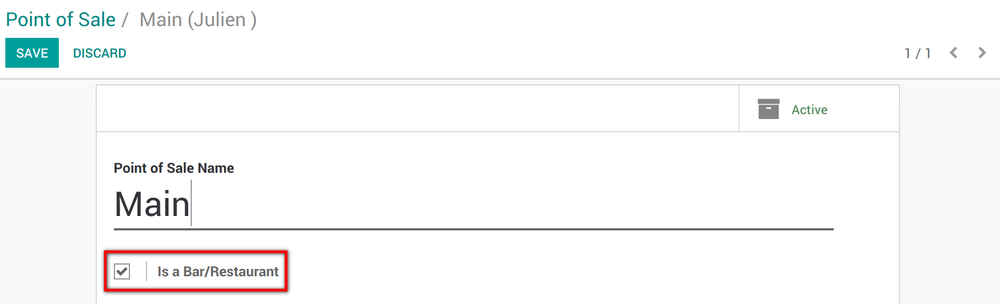
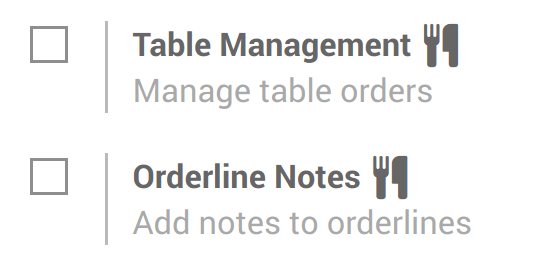

Это краткое пошаговое руководство проведет вас через Odoo CRM и поможет вам легко описать вашу воронку продаж и постоянно управлять ей от Лида к клиенту.
Настройка
Создайте свою базу данных на сайте www.odoo.com/start, выберите значок CRM в качестве первого приложения для установки, заполните форму и нажмите Create now. Вы будете автоматически перенаправлены в модуль, когда база данных будет создана.
Совет
Вы заметите, что установка модуля CRM создала подмодули: Чат, календарь и контакты. Они являются обязательными, так что бы каждая функция приложения работает правильно.
Введение в Планировщик продаж
Планировщик продаж - это полезное пошаговое руководство, созданное для того, чтобы помочь вам реализовать свою воронку продаж и легче определить цели продаж. Мы настоятельно рекомендуем вам пройти каждый шаг этого инструмента, если вы первый раз используете Odoo CRM, и следуйте указанным требованиям. Это будет своеобразная шпаргалка, которая будет видна только вам.
Вы можете открыть Планировщик продаж из любого места в CRM-модуле, нажав на индикатор выполнения, расположенный в верхней правой части экрана. Он покажет вам, насколько полно вы заполнили Планировщик продаж.
Настройте свою первую команду продаж
Создание новой команды
Команда Direct Sales создается по умолчанию. Вы можете использовать ее или создать новую. Дополнительную информацию смотрите Как создать новую команду продаж?.
Добавьте продавцов вашей команде продаж
После создания команды продаж, следующий шаг - связать своих продавцов с созданной командой, чтобы они могли работать над возможностями, которые будут получать. Например, если в вашей компании Тим продает продукты, а Джон продает контракты на обслуживание, они будут назначены разным командам и будут получать только те возможности, которые имеют для них смысл.
В Odoo CRM вы можете создать нового пользователя на лету и назначить его непосредственно команде продаж. На Dashboard (карта команды продаж) нажмите кнопку More выбранной вами команды продаж, затем Settings. Затем в разделе Assignation нажмите кнопку Создать, чтобы добавить нового продавца в команду.
В появившемся окне Создать: продавец (см. Снимок экрана ниже) вы можете назначить кого-то в команду:
Либо ваш продавец уже существует в системе, и вам просто нужно щелкнуть по нему из раскрывающегося списка, и он будет присоединен команде
Или вы хотите назначить нового продавца, который еще не существует в системе, вы можете сделать это, создав нового пользователя на лету. Просто введите имя своего нового продавца и нажмите «Создать» (см. Ниже), чтобы создать нового пользователя в системе и напрямую назначить его данной команде продаж. Новый пользователь получит приглашение по электронной почте для установки своего пароля и входа в систему. См. Как создать нового продавца? для получения дополнительной информации об этом процессе
Настройте свою воронку продаж
Теперь, когда ваша команда продаж создана, и ваши продавцы связаны с ней, вам нужно будет настроить свою воронку продаж. Создайте процесс, с помощью которого ваша команда будет генерировать, квалифицировать и закрывать возможности через ваш цикл продаж. Обратитесь к документу Настройте и организуйте свою воронку продаж, чтобы определить этапы вашей воронки.
Настройка входящей электронной почты для создания возможностей
В Odoo CRM одним из способов создания возможностей в вашей команде продаж является создание общего адреса электронной почты в качестве триггера. Например, если персональный адрес электронной почты вашей прямой команды - direct@mycompany.example.com, каждое отправленное электронное письмо автоматически создаст новую возможность в команде продаж.
См. страницу Как генерировать лиды из входящих писем?, чтобы настроить ее.
Автоматическое распределение Лидов
Если ваша компания ежедневно генерирует большой объем потенциальных клиентов, было бы полезно настроить распределение Лидов, чтобы система автоматически распределяла все ваши возможности в нужную команду продаж.
Для получения дополнительной информации см. документ Автоматизация распределения Лидов конкретным отделам продаж или продавцам.